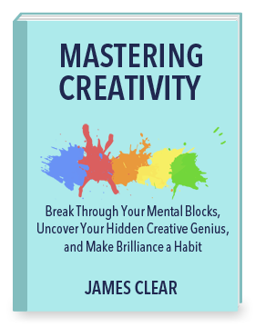
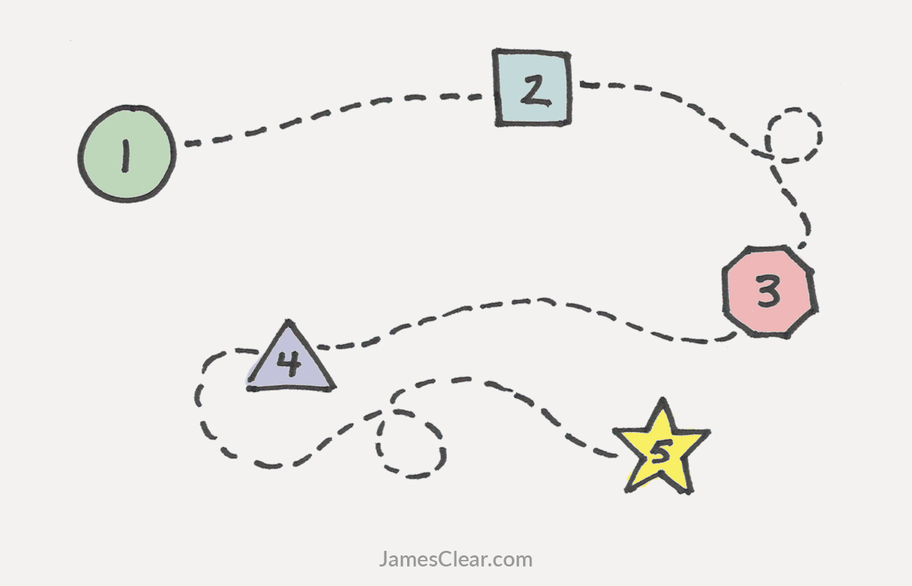

Creativity:
How to Unlock Your Hidden Creative Genius

Read this guide and discover the creative strategies of the greatest artists, musicians, and writers in the world—Pablo Picasso, Franz Kafka, Dr. Seuss and many more.
The full guide is packed with 36 pages of information on how creativity works, how to overcome the mental blocks that all artists face, and how to make creative thinking a habit.
For instant access, just enter your email address and click “Get Updates!” You'll get immediate access to the guide, plus you'll receive new articles every Monday and Thursday about boosting your creativity, mastering your habits, and living a good life.
Don't see a signup form? Send me a message here and I'll add you right away.
This page pulls together my most essential information about creativity. I’ll share how creativity works, how to find your hidden creative genius, and how to create meaningful work by learning how to make creative thinking a habit. I’ve tried to present the basics of everything you need to know to start mastering creativity, even if you don’t have much time.
At the end of this page, you’ll find a complete list of all the articles I have written on creativity.

What is Creativity?
Let's define creativity.
The creative process is the act of making new connections between old ideas or recognizing relationships between concepts. Creative thinking is not about generating something new from a blank slate, but rather about taking what is already present and combining those bits and pieces in a way that has not been done previously.
While being creative isn't easy, nearly all great ideas follow a similar creative process. In 1940, an advertising executive named James Webb Young published a short guide titled, A Technique for Producing Ideas.
Young believed the process of creative connection always occurred in five steps.
The Creative Process
Gather new material. At first, you learn. During this stage you focus on
1) learning specific material directly related to your task and
2) learning general material by becoming fascinated with a wide range of concepts.
Thoroughly work over the materials in your mind. During this stage, you examine what you have learned by looking at the facts from different angles and experimenting with fitting various ideas together.
Step away from the problem. Next, you put the problem completely out of your mind and go do something else that excites you and energizes you.
Let your idea return to you. At some point, but only after you have stopped thinking about it, your idea will come back to you with a flash of insight and renewed energy.
Shape and develop your idea based on feedback. For any idea to succeed, you must release it out into the world, submit it to criticism, and adapt it as needed.
Read more: For a More Creative Brain, Follow These 5 Steps
Is There Such a Thing as ‘Naturally Creative'?
While we often think of creativity as an event or as a natural skill that some people have and some don't, research actually suggests that both creativity and non-creativity are learned.
According to psychology professor Barbara Kerr, “approximately 22 percent of the variance [in creativity] is due to the influence of genes.” This discovery was made by studying the differences in creative thinking between sets of twins.
All of this to say, claiming that “I'm just not the creative type” is a pretty weak excuse for avoiding creative thinking. Certainly, some people are primed to be more creative than others. However, nearly every person is born with some level of creative skill and the majority of our creative thinking abilities are trainable.
Read more: Creativity Is a Process, Not an Event